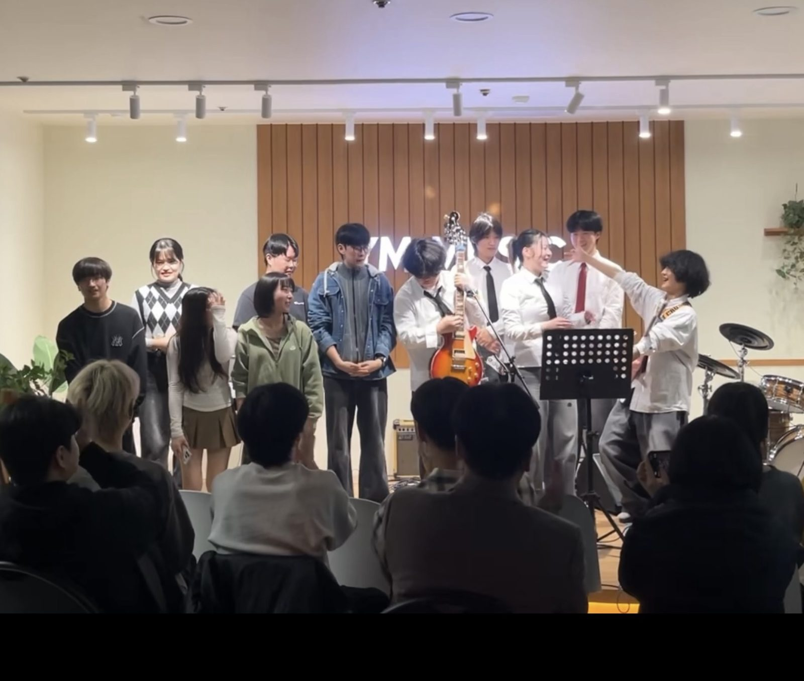

YM MUSIC Contemporary Music AcademyA journey of finding
yourself through music.
Music is a special language for understanding yourself, holding your feelings, and giving the world your own voice. We do our very best to help students express themselves through music by creating songs filled with their own personalities and stories.

Whether you come because you want to sing one favorite song, because you're finally starting the instrument you wished to learn as a child, or because you're aiming for the university and the stage you want — YM MUSIC welcomes every one of those beginnings.
Hobby time is relaxed and enjoyable; time spent preparing for a major and entrance exams is systematic and intense. We design lessons around each student's pace and goals.
In contemporary music entrance prep especially, we have built a steady record of results, and many students have been admitted to the universities they aimed for with us. But it always began the same way — with a love of music.
Start with YM MUSIC. We share this moment of writing melodies together so that your own sound can light up the world.
Whatever your goal is
Whether you're fine with not being good yet or have a clear goal — YM MUSIC has a path for each of you.
For fun, at easeFor Everyday Joy
It's fine not to be good yet. One favorite song or one instrument you've always wanted to learn is enough. We create time to enjoy music at your own pace, with no pressure.
Learn more PATH 02Major & exam prep, with a goalFor Your Goal
If there's a university you want or a stage you want to stand on, we prepare for that goal together with a systematic curriculum and real-performance experience.
Learn moreWhy students pass
If you're preparing for a major or entrance exams, here's why YM MUSIC has been able to keep a high admission success rate.
Personalized curriculumTailored Curriculum
With a tailored exam program built around each student's strengths and weaknesses, you prepare in a way optimized for your own goal.
Expert instructorsExpert Faculty
Careful 1:1 guidance from instructors who graduated from leading schools such as Seoul Institute of the Arts, Dong-ah Institute of Media and Arts, Howon University and Berklee College of Music.
Real-exam mock tests and evaluationMock Exams
Regular mock entrance tests and feedback build real-exam instinct and improve weak spots.
Admissions portfolio preparationPortfolio
From choosing pieces to arranging, performing and recording — we complete a real-world-level portfolio tailored to your major.
Admission records written by our students
A record built together with students who prepared for their majors and entrance exams.
Universities & graduate schools
Seoul Institute of the Arts
Min O-a (Vocal), Kim O-jung (Vocal), Lee O-hyeon (Vocal), Kim O-seon (Composition), Lee O-u (Drums), Kim O-yeon (Vocal – waitlist 1), Hong O-seok (MIDI – 1st round), Kim O-seon (Vocal – 1st round), Lee O-in (Guitar – 1st round), Son O-yeong (Vocal – 1st round), Shin O-min (Vocal – 1st round), Joo O-tae (Vocal – 1st round), Ahn O-jin (Vocal – 1st round), Cho O-rin (Singer-songwriter – 1st round), Joo O-hui (Vocal – 1st round), Ji O-eun (Vocal – 1st round), Park O-hyeon (Vocal – 1st round), Sung O-hyeon (Keys – 1st round), Min O-yeon (Vocal – 1st round), Son O-hui (Bass – 1st round)
Dong-ah Institute of Media and Arts
Seo O-jeong (Vocal), Kwon O-hyeon (Vocal), Jung O-won (Vocal), Jung O-in (K-POP), Ko O-su (Bass), Yoon O-jun (Singer-songwriter), Lee O-eun (Piano), Lee O-seon (Composition), Kim O-cheol (Vocal – 1st round), Seon O-yong (Singer-songwriter – 1st round)
Howon University
Lee O-won (Vocal), Kim O-jeong (Vocal), Kim O-gyeong (Vocal), Park O-a (Vocal), Lee O-seong (Vocal), Kwon O-u (K-POP), Bae O-seon (K-POP), Kim O-hyeok (Piano), Jung O-su (Singer-songwriter), Cho O-won (Singer-songwriter), Lee O-jun (Composition), Kim O-min (Composition)
Hongik University
Yoo O-jin (Singer-songwriter – Grad School of Performing Arts), Ji O-seon (Grad School of Performing Arts), Woo O-jin (Vocal – waitlist 10), Min O-u (Vocal – 1st round), Kim O-jin (Keys – 1st round)
Hanyang University
Yang O-eun (Piano), Joo O-yun (Vocal – waitlist 1), Kim O-seon (Vocal – 1st round), Joo O-sol (Vocal – 1st round), Kim O-won (Vocal – 1st round), Yoon O-jun (Vocal – 1st round), Kwon O-yeon (Vocal – 1st round), Kim O-ji (Vocal – 1st round), Jin O-yeong (Vocal – 1st round)
Kyung Hee University
Kim O-ram (Vocal – grad school), Yoon O-ha (Singer-songwriter – grad school), Yoo O-seon (Composition – grad school)
Baekseok University of Arts
Yang O-eun (Piano), Lee O-yun (Vocal), Kim O-ye (Vocal), Park O-rim (Vocal), Song O-hui (Vocal), Lee O-rin (Vocal), Roh O-yun (Vocal), Kang O-hui (Vocal), Ahn O-tae (Vocal), Ahn O-min (Vocal), Byun O-jin (Vocal), Kwak O-a (Vocal), Jung O-heon (Vocal), Lee O-ju (Composition), Lee O-won (Composition), Jeon O-hye (Composition), Kang O-won (Bass), Park O-yeon (Drums), Choi O-bin (Drums), Park O-jun (Musical), Kim O-seon (Musical)
Seokyeong University
Lee O-rim (Vocal), Yoon O-seok (Vocal), Shin O-in (Vocal), Lee O-chan (Piano), Kim O-hun (Singer-songwriter – waitlist 1), Cho O-yun (Vocal – 1st round), Jung O-jin (Vocal – 1st round)
Gukje University of the Arts
Park O-a (Vocal), Kwon O-su (Vocal), Lee O-su (Singer-songwriter), Gil O-seon (Singer-songwriter), Min O-jun (Keys), Kim O-nam (Bass), Lee O-eun (Vocal), Kim O-a (Vocal), Cho O-un (Singer-songwriter), Byun O-hyeok (Vocal), Kim O-ju (Vocal), Kim O-jin (Composition), Lim O-yeon (Drums), Ko O-jin (Vocal), Lee O-bin (Vocal), Jeon O-in (MIDI), Lee O-gyeong (MIDI), Ha O-seon (MIDI)
Dongduk Women's University
Park O-hyeon (Vocal), Myung O-ju (Bass), Ahn O-geon (Vocal – waitlist 6), Lee O-jin (Vocal – waitlist 3), Kim O-min (Vocal – 1st round), Choi O-jun (Vocal – 1st round)
Hanyang Women's University
Yang O-eun (Piano)
Sungshin Women's University
Kim O-seon (Vocal), Son O-jin (Vocal), Lee O-eun (Vocal), Lee O-rim (Composition), Kwon O-eun (Vocal – waitlist 4), Park O-un (Vocal – waitlist 7), Son O-seo (Bass – waitlist 8)
Jeonghwa Arts College
Kim O-hyeon (Vocal), Shin O-seok (Vocal), Jang O-jun (Vocal), Jeon O-jin (Vocal), Seok O-yun (Vocal), Kim O-ho (Vocal), Oh O-jin (Vocal), Kim O-hyeon (Drums)
Myongji College
Song O-seong (Vocal), Cho O-hyeok (Singer-songwriter), Choi O-cheol (Vocal), Seo O-in (Guitar), Kim O-tae (Vocal), Ahn O-bin (Vocal), Lee O-heon (Keys), Yang O-ju (Composition), Park O-hye (MIDI), Kim O-tae (Vocal), Song O-yeon (Vocal), Roh O-won (Vocal)
Yeoju University
Kim O-hyeon (Drums), Min O-yun (Vocal), Kim O-yun (Vocal), Kim O-seok (Vocal), Lee O-seok (Singer-songwriter), Shin O-yeon (Composition)
Dankook University
Kim O-jeong (Vocal), Lee O-ung (Music technology – waitlist 1), Won O-yong (Studio composition – waitlist 4)
Kookmin University
Kim O-jin (Classical composition)
Hoseo University
Yang O-eun (Piano)
Conservatories
Soongsil Univ. (Kim O-min – Vocal), Yonsei Univ. (Kim O-in – Rap), Hanyang Univ. (Son O-seon – Guitar, Yoon O-uk – Guitar), Myongji Univ. (Kim O-hyun – Composition), Chugye University for the Arts (Cho O-won – Composition), Sejong Univ. (Kim O-jin – Composition, Lee O-kyung – Keys), KC Arts Academy (Kim O-min – Vocal)
Arts high schools
Seoul School of Performing Arts
Lee O-in (Vocal), Lee O-seon (Vocal), Jeon O-gwon (Vocal), Park O-hyeon (Keys), Choi O-jong (Keys), Yang O-rim (Keys), Hyun O-won (Music content), Park O-yeon (Music content), Lee O-hye (Music content), Son O-hun (Music content)
Hallym Entertainment Arts High School
Song O-jeong (Keys), Jung O-won (Keys), Kwon O-a (Keys), Jung O-ho (Keys), Jeon O-rim (Keys), Song O-in (Entertainment dept.)
Seoul Practical Music High School
Lee O-rin (Vocal), Lee O-hyeon (Vocal), Kim O-seon (Vocal), Won O-in (Composition), Kim O-min (Keys), Jung O-in (Keys), Choi O-min (Keys), Lee O-hyeon (Keys), Kim O-u (Guitar), Myung O-ji (Guitar), Kwon O-seok (Drums), Jung O-hyeon (Bass)
Lila Art High School
Kim O-sik (Vocal), Kim O-yeon (Vocal), Kim O-eun (Vocal), Lee O-won (Vocal), Lee O-yeon (Vocal), Kim O-yeong (Vocal), Choi O-yeon (Drums), Lim O-hyeon (Drums)
Seoseoul Life Science High School
Ahn O-jun (Vocal), Han O-yun (Vocal), Park O-min (Vocal), Jung O-rim (Vocal), Kim O-su (Vocal), Jeon O-yeong (Vocal), Choi O-jin (Keys), Shin O-gyeong (Keys), Lee O-min (Keys), Sung O-bin (Drums)
Gyeonggi Arts High School
Kim O-jin (Vocal), Ko O-cheon (Composition), Choi O-seon (Drums)
Incheon Popular Arts High School
Jung O-sik (Vocal), Lee O-won (Vocal), Kim O-seong (Keys), Lee O-jun (Keys)
Jeonju Arts High School
Kim O-won (Vocal)
Vocational schools & specialized institutions
Ahyeon Industrial Information School
Kwon O-jeong (Vocal), Jung O-chan (Vocal), Min O-rim (Vocal), Seo O-hwan (Vocal), Roh O-ju (Vocal), Ko O-min (Vocal), Ahn O-hyeon (Vocal), Kim O-jun (Vocal), Lee O-jin (Vocal), Kim O-hyeok (Bass), Song O-o (Bass), Yang O-seon (Bass), Jung O-yeon (Drums), Kim O-hyeon (Drums), Lim O-jun (Drums), Jung O-bin (Drums), Oh O-seon (Drums)
Seocho Culture & Arts Information School
Lee O-gyeong (Vocal), Bae O-jin (Vocal), Shim O-u (Vocal), Lee O-hyeok (Vocal), Kang O-yeon (Vocal), Kang O-jin (Vocal), Lee O-jin (Vocal), Lee O-gyeom (Keys), Kim O-jin (Keys), Kim O-seong (Keys), Choi O-hyo (Keys), Jung O-bin (Keys), Jeon O-yeon (Keys), Park O-yeong (Keys), Shin O-won (Guitar), Jung O-jun (Guitar), Ha O-hyeon (Bass)
Seoul Comprehensive Arts Practical School (SAC)
Kim O-jin (Composition), Shin O-hyeon (Vocal – scholarship), Jeon O-jae (Vocal), Jung O-su (Vocal), Won O-yeon (Keys)
Korea Arts Institute
Jung O-tae (Vocal), Choi O-sin (Keys), Kim O-bin (Keys), Park O-je (MIDI), Cho O-a (MIDI)
Baekje Institute of the Arts (Contemporary Music Dept.)
Lee O-min (MIDI), Jung O-in (MIDI), Ha O-ju (MIDI), Cho O-cheol (MIDI), Kim O-jin (MIDI), Lee O-hun (MIDI), Kim O-rim (MIDI), Jeon O-tae (Vocal), Kwon O-hui (Vocal), Kim O-hyeon (Drums)
New names keep being added alongside YM MUSIC.
Pages worth a look
Your story starts here.
Now it's time to begin your own story.
Preparing for a contemporary music major? YM MUSIC's experts are with you.